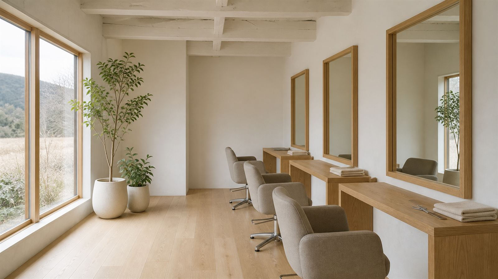
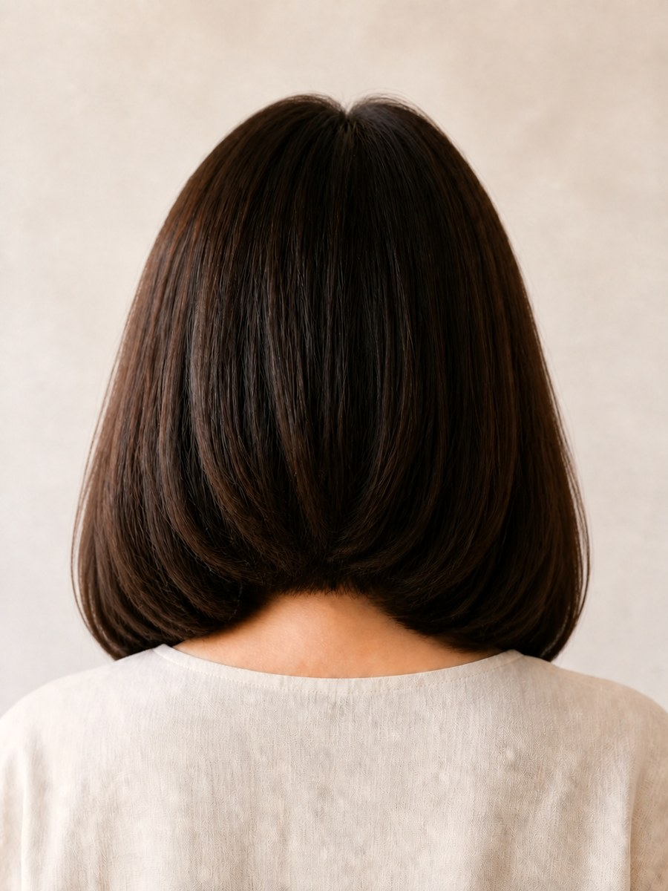
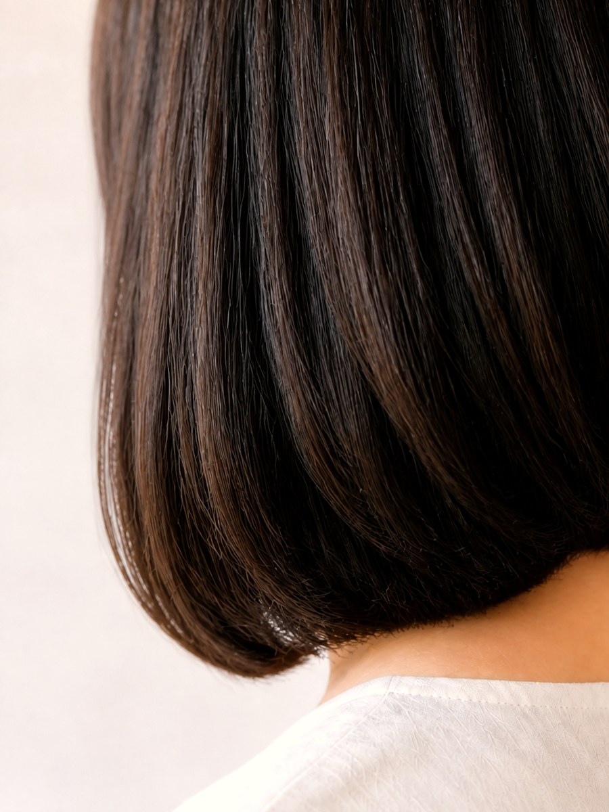
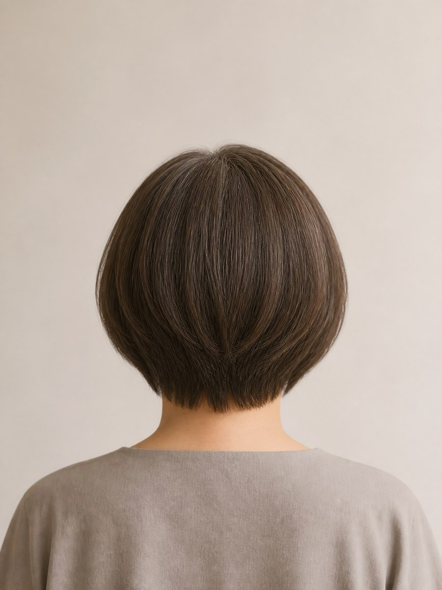
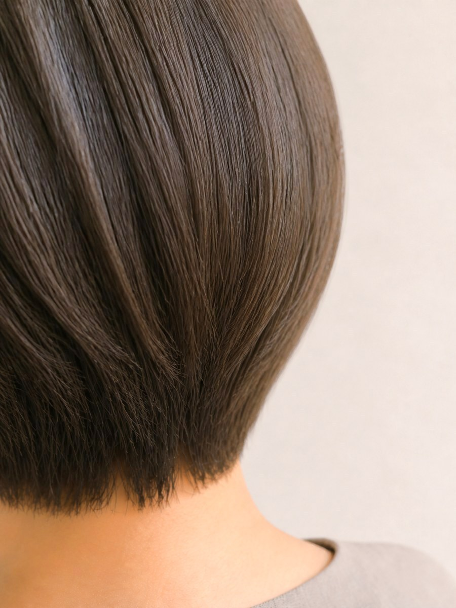
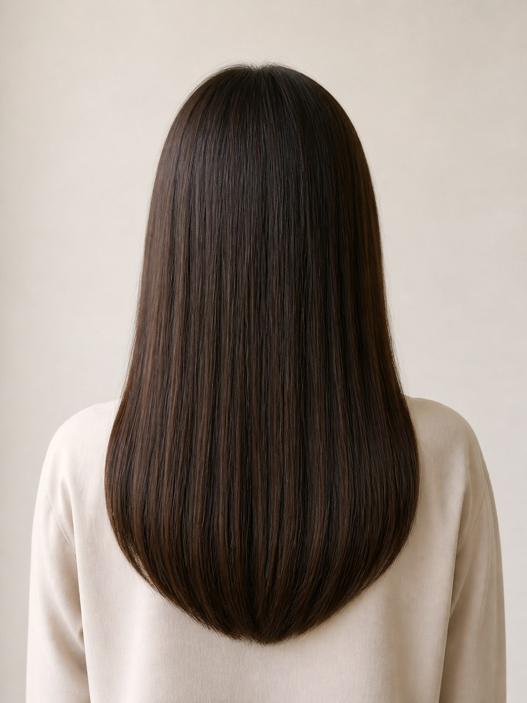
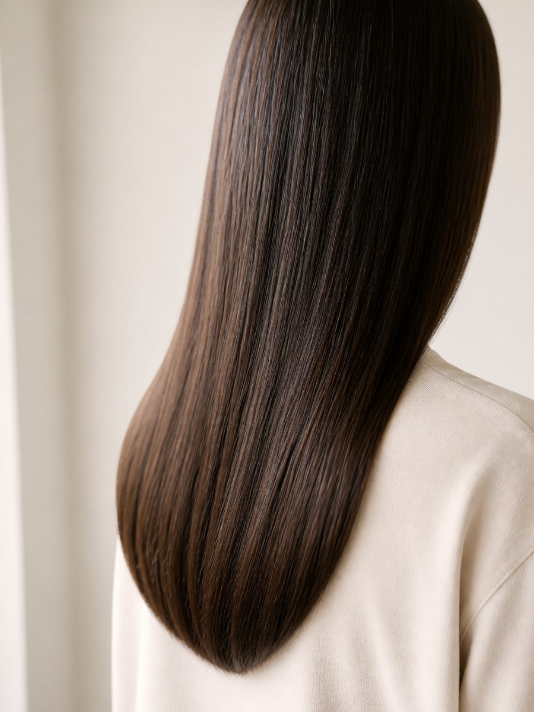
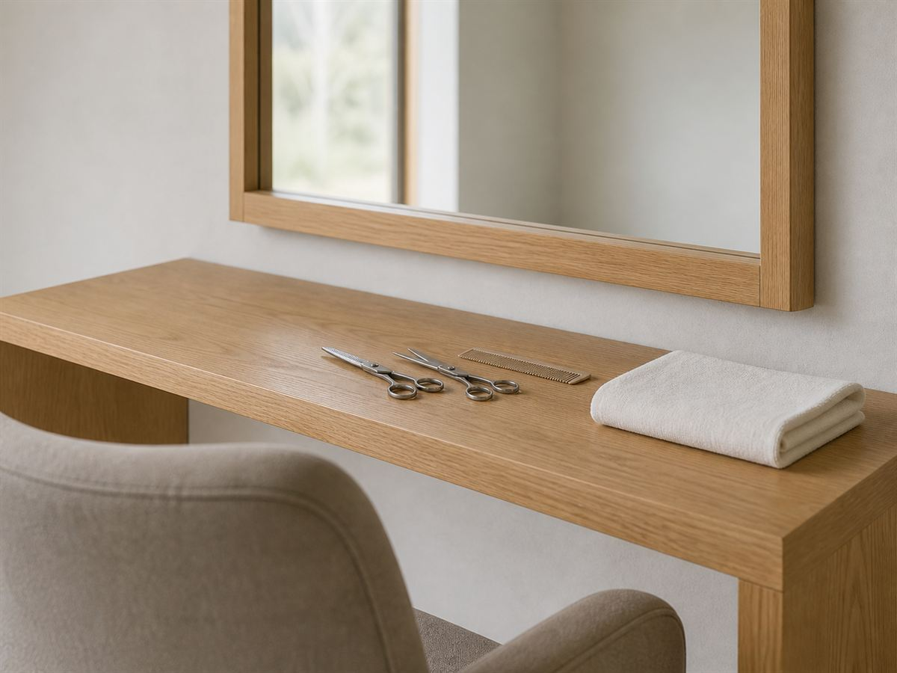

セット面3席、予約はおひとりずつ。ゆっくりお過ごしいただける一軒家の美容室です

田んぼと家並みのあいだにある、古い平屋を直した小さな美容室です。予約はおひとりずつお取りしていますので、まわりを気にせずお過ごしいただけます。髪のこと、白髪のこと、これからどうしていきたいか。まずはゆっくりお聞かせください。
同じ時間に他のお客様のご予約は入れていません。待ち時間がなく、話し声が気になることもありません。
しみにくい薬剤を選んでいます。頭皮が弱い方、以前しみて痛かった方は、ご予約のときにお申しつけください。
駐車場は3台。入口に段差がなく、車椅子や杖の方もそのままお入りいただけます。


毛先を内に入れて、後ろに丸みを出しました。襟足は短く整えています。


真っ黒に染めつぶさず、根元に明るさを残しています。伸びても目立ちにくい色です。


まっすぐにしすぎず、根元の丸みを残しました。毛先はぱさつかせていません。

ネットで24時間ご予約いただけます。はじめての方も、髪のお悩みだけのご相談も歓迎します。